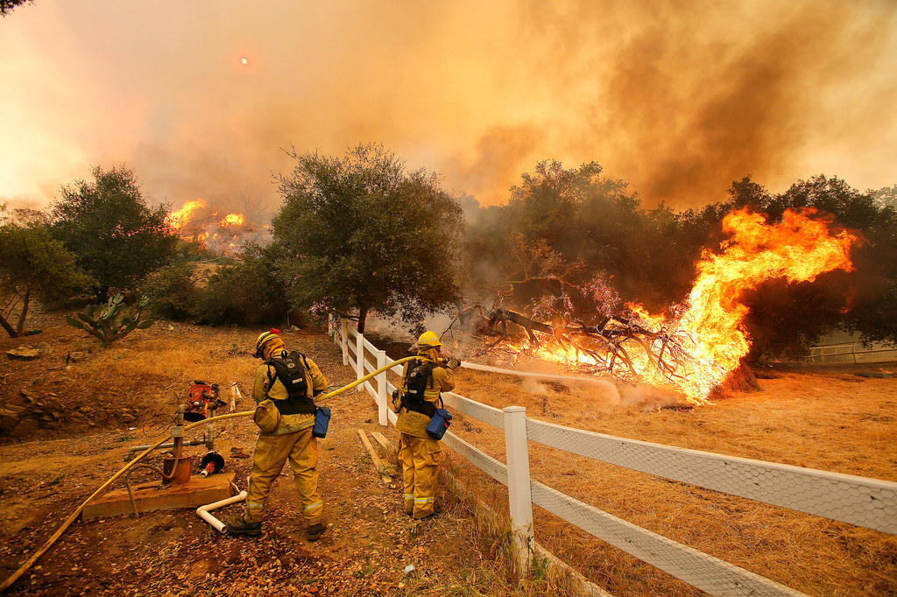
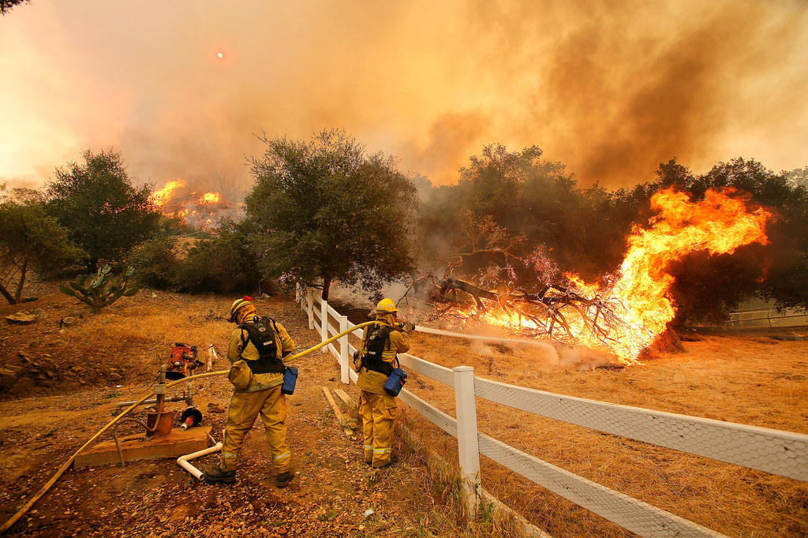

Quick Facts and Figures about Wildfires, and What We Are Doing to Help
Geographical events shape our universe. On the other hand, natural disasters destroy Mother Earth and its inhabitants.
In fact...
- The forest fire that incinerated northern British Columbia and Alberta grew to a final size of over 3.5 million acres.
- By December 18, 2020 there were about 57,000 wildfires in the world.
- Fire also releases carbon dioxide—a key greenhouse gas—into the atmosphere.
- California's worst wildfire has killed 85 people, and 11 residents in the Northern California counties where the blaze tore through in early November are still missing.
This is just some of the most saddening facts of wildfires. It's important to mitigate the risks of wildfires, especially in regions where wildfires are unbelievably common. And thanks to Withering Wildfires, it is now possible.
 

Have additional questions? Contact the team!